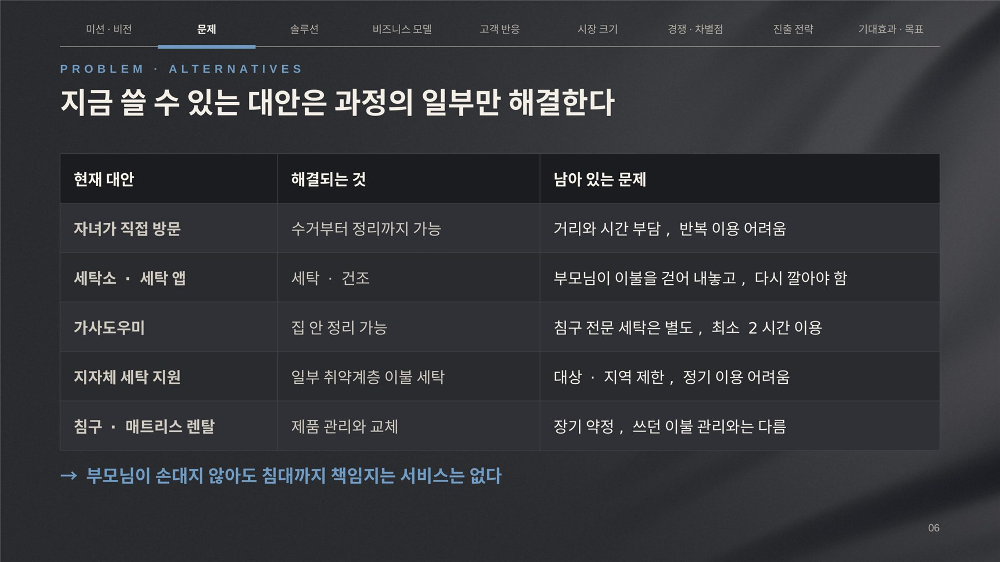
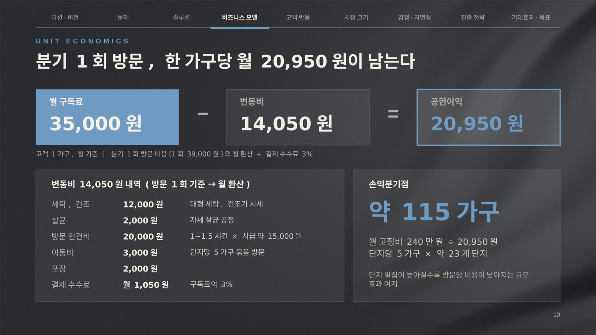
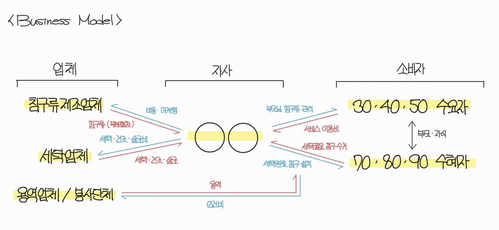
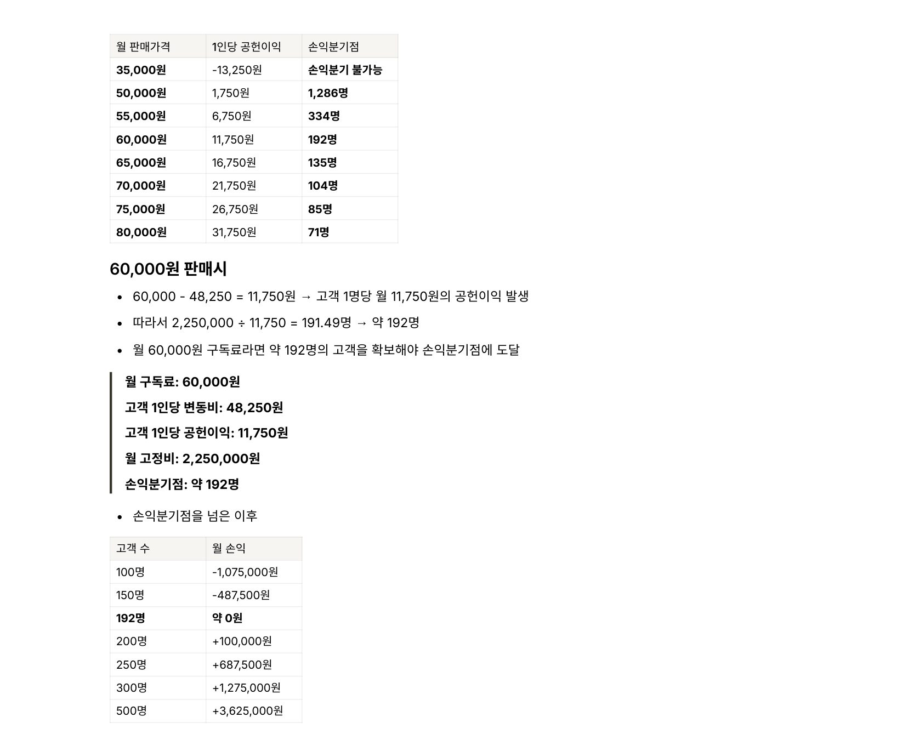

Overview
Ibul Anbu is a 3-week ENACTUS MVP for older parents who cannot wash heavy bedding alone. It produced a survey test, a unit-economics model and an IR deck for the joint PIC.
- Shown at
- ENACTUS UOS school PIC, then the joint PIC on 2026-10-10
- Customer
- adults aged 40 to 59 who pay; parents aged 75 and over who use it
- Price
- 35,000 KRW a month, one home visit per quarter
- Ran on
- an online Google Form, shared one to one during the Chuseok holiday
Problem define
Parents "cannot carry heavy bedding to the laundry" and keep using old covers. Their children live far away and leave it until the next visit.
- 20 of 26 valid survey respondents live one hour or more, one way, from their parents.
- 88.8% of people aged 65 and over have no long-term care grade, so care services do not reach them.

Solution
A child signs up; staff visit each quarter, strip the bed, wash, dry and sanitize the bedding, then remake it. Parents do nothing; children get a visit report with photos.
| Value with unit | What it measures (10 words or fewer) |
|---|---|
| 7 of 26 | Valid respondents choosing in-home install at 35,000 KRW |
| 20,950 KRW | Planned monthly margin per household after variable cost |
| about 115 households | Planned break-even at 2.4M KRW fixed cost a month |

Process
- Scoping. Reviewed three housing ideas for international students after dropping a buddy service; all 12 universities checked already ran one.
- Survey. Switched to elderly bedding and ran an online survey: 28 responses, 26 valid. The door-swap option was dropped for one in-home plan.
- Costing. Judges at the school PIC doubted the price. A recount with rental bedding and monthly visits gave minus 13,250 KRW a month per customer.
비용 재산정(2026-10-08) - Rebuild. Dropped rental and kept the parents' own bedding, visits each quarter, 5 homes per complex: 39,000 KRW a visit.
비용 재산정 (2), IR deck p.10


Lesson
People said they would pay; nobody has paid yet.
The survey measured intent, not purchase, and the margin rests on assumed costs (15,000 KRW an hour, 5 homes per complex) that were never timed in a real visit.